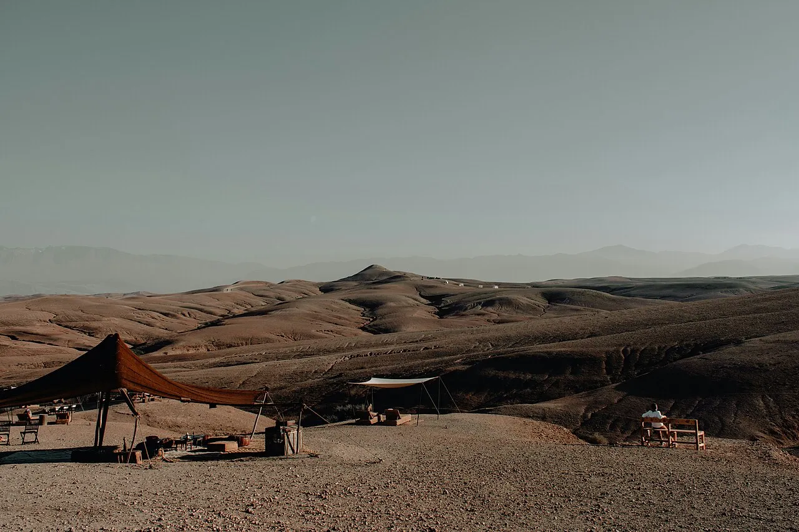

Coupe du monde
2030 au Maroc.
Soirées de match privées, accueil de clients, séminaires, lancements et voyages de presse autour de la Coupe du monde 2030 au Maroc, avec notre propre DMC sur place.
You dare us, we did it.
Réponse sous 24 h, proposition sous 72 h.
Que peut organiser une agence événementielle autour de la Coupe du monde 2030 au Maroc ?
Le Maroc accueillera la Coupe du monde 2030 avec l'Espagne et le Portugal (désignation du 11 décembre 2024). L'agence Dare-Dare, qui est sa propre DMC au Maroc, produit autour du tournoi les événements des marques et des entreprises : soirées de match privées, accueil de clients, séminaires et incentives, lancements de produits, voyages de presse et d'influence, avec la logistique sur place à Casablanca, Rabat, Marrakech, Tanger, Fès et Agadir. Nous ne vendons ni billets ni forfaits d'hospitalité : nous créons ce qui se passe autour des matchs.
- Où
- Casablanca, Rabat, Marrakech, Tanger, Fès, Agadir.
- Pour qui
- Marques, entreprises, agences.
- Hors périmètre
- Billetterie et forfaits des organisateurs.
- Réponse
- Sous 24 h.
- Proposition
- Sous 72 h.
Autour du tournoi,
six formats.
Des événements de marque et d'entreprise, produits sur place et jamais habillés des signes du tournoi : l'identité visuelle reste la vôtre.
Ce qui est connu,
ce qui ne l'est pas encore.
Confirmé
- Le 11 décembre 2024, le Congrès extraordinaire de la FIFA a désigné le Maroc, l'Espagne et le Portugal pour la Coupe du monde 2030.
- Trois matchs du centenaire se joueront en Argentine, au Paraguay et en Uruguay.
- La candidature marocaine a présenté six villes : Casablanca, Rabat, Marrakech, Tanger, Fès et Agadir.
Pas encore publié
- Les dates et le calendrier des matchs.
- La répartition des matchs entre les villes marocaines.
- Nous n'annonçons rien de ce qui n'a pas été publié par l'organisateur.
Notre position
- Aucun lien avec les organisateurs ni leurs marques.
- Des événements décrits par leur lieu et leur format, pas par leurs signes distinctifs.
- Des options posées tôt, confirmées quand le calendrier l'est.
Sources : FIFA, « Hosts appointed for 2030 and 2034 FIFA World Cups » (fifa.com) et communiqué du Congrès extraordinaire du 11 décembre 2024 (inside.fifa.com) ; villes de la candidature : presse marocaine (TelQuel, 2 août 2024), à confirmer auprès de l'organisateur.
Poser vos options
avant le calendrier.
Les dates de matchs ne sont pas publiées, mais les hôtels, les riads et les équipes locales se réservent d'abord. Voici l'ordre dans lequel nous avançons avec vous.
Cadrer. Votre objectif, votre public, vos villes possibles et votre jauge.
Optionner. Lieux, hôtels, riads, transferts : des options dont nous lisons ensemble les conditions d'annulation.
Attendre sans perdre de temps. Le concept et les devis avancent, prêts à être confirmés dès que l'organisateur publie le calendrier.
Produire. Confirmation, rétroplanning, équipes locales, jour J et bilan.
Six villes,
une seule équipe sur place.
Casablanca
Capitale économique du Maroc, ses hôtels d'affaires et sa façade atlantique. Notre équipe y est installée.
Rabat
Capitale administrative et ville des institutions, ses jardins, sa médina et ses palais.
Marrakech
Riads, palais et désert d'Agafay aux portes de la ville : notre terrain de séminaires et d'incentives.
Tanger
Ville portuaire face au détroit de Gibraltar, entre Atlantique et Méditerranée.
Fès
Sa médina médiévale et ses ateliers d'artisans, pour des programmes culturels.
Agadir
Station balnéaire de la côte atlantique, ses plages et ses hôtels de séjour.
Notre agence événementielle à Marrakech et son réseau DMC couvrent le reste du pays.

Désert d'Agafay. Photo : Josephhassane, CC0.
Questions fréquentes
sur la Coupe du monde 2030 au Maroc
La Coupe du monde 2030 aura-t-elle lieu au Maroc ?
En partie. Le 11 décembre 2024, le Congrès extraordinaire de la FIFA a désigné le Maroc, l'Espagne et le Portugal pour accueillir ensemble la Coupe du monde masculine 2030. Trois matchs du centenaire se joueront en Argentine, au Paraguay et en Uruguay. Les dates et la répartition des matchs entre les villes seront publiées par l'organisateur : nous ne les annonçons pas.
Quelles villes marocaines accueilleront des matchs ?
La candidature a présenté six villes : Casablanca, Rabat, Marrakech, Tanger, Fès et Agadir. La liste définitive et l'attribution des matchs relèvent de l'organisateur ; à vérifier sur le site de la FIFA avant tout engagement.
Vendez-vous des billets ou des forfaits d'hospitalité ?
Non. Nous ne vendons ni billets ni forfaits d'hospitalité des organisateurs du tournoi. Nous créons les événements qui se tiennent autour des matchs : soirées, accueil de clients, séminaires, lancements, voyages de presse, avec la logistique sur place.
Peut-on organiser une soirée de retransmission de match pour ses équipes ou ses clients ?
Oui, dans un lieu privé et pour des invités. Les droits de retransmission se vérifient auprès du diffuseur du match : nous le faisons pour chaque soirée, avant de choisir l'écran et le lieu. La soirée est pensée autour de l'ambiance, de la cuisine et de la scénographie, aux couleurs de votre marque.
Combien de temps à l'avance faut-il réserver au Maroc ?
Le plus tôt possible : comptez au minimum 4 à 6 mois pour un événement à l'étranger, et davantage pour des hébergements dans une ville susceptible d'accueillir des matchs, où la demande devrait augmenter quand le calendrier sera publié. Nous posons des options dès maintenant, dont nous lisons les conditions d'annulation avec vous.
Combien coûte un événement autour de la Coupe du monde au Maroc ?
Nous n'affichons pas de prix type : le budget dépend de la ville, du format, du nombre d'invités, de l'hébergement et des transferts. Réponse sous 24 h, devis détaillé poste par poste.
Pouvez-vous organiser un événement dans plusieurs villes marocaines ?
Oui : Casablanca, Rabat, Marrakech, Tanger, Fès et Agadir. Au Maroc, nous sommes notre propre DMC, avec une équipe installée entre Paris et Casablanca et des prestataires locaux travaillés en direct.
Êtes-vous affiliés à la FIFA ou aux organisateurs du tournoi ?
Non. L'agence Dare-Dare n'est pas affiliée à la FIFA ni aux organisateurs du tournoi, et n'utilise ni leurs logos, ni leurs mascottes, ni leurs marques. Nous décrivons des événements produits au Maroc à l'occasion de la Coupe du monde 2030.
Maroc, services et guides.
- Accueil : agence événementielle Paris, Cannes, Maroc
- Agence événementielle à Marrakech, DMC Maroc
- Agence séminaire et incentive
- Agence voyage de presse
- Agence événement influence
- Agence lancement de produit
- Agence team building
- Organiser un événement au Maroc avec une DMC
- Organiser un séminaire au Maroc : le guide
- Calendrier 2027 des temps forts
Un projet autour du tournoi ? Écrivez-nous : réponse sous 24 h.
Je vous mets
au défi de…
Un défi, une idée, un lieu : réponse sous 24 h, avec une première idée.
Votre événement,
au Maroc.
Une soirée de match, un accueil de clients, un séminaire ou un lancement autour du tournoi ? Écrivez-nous. Réponse sous 24 h.
Réserver un appel de 15 minutes · WhatsApp · contact@agence-dare-dare.fr · +33 6 81 96 93 62
Un événement peut aussi faire du bien : nous visons à reverser 1 à 2 % de nos bénéfices chaque année à l'Association Petits Princes, et nous accueillons des stagiaires. Notre charte RSE